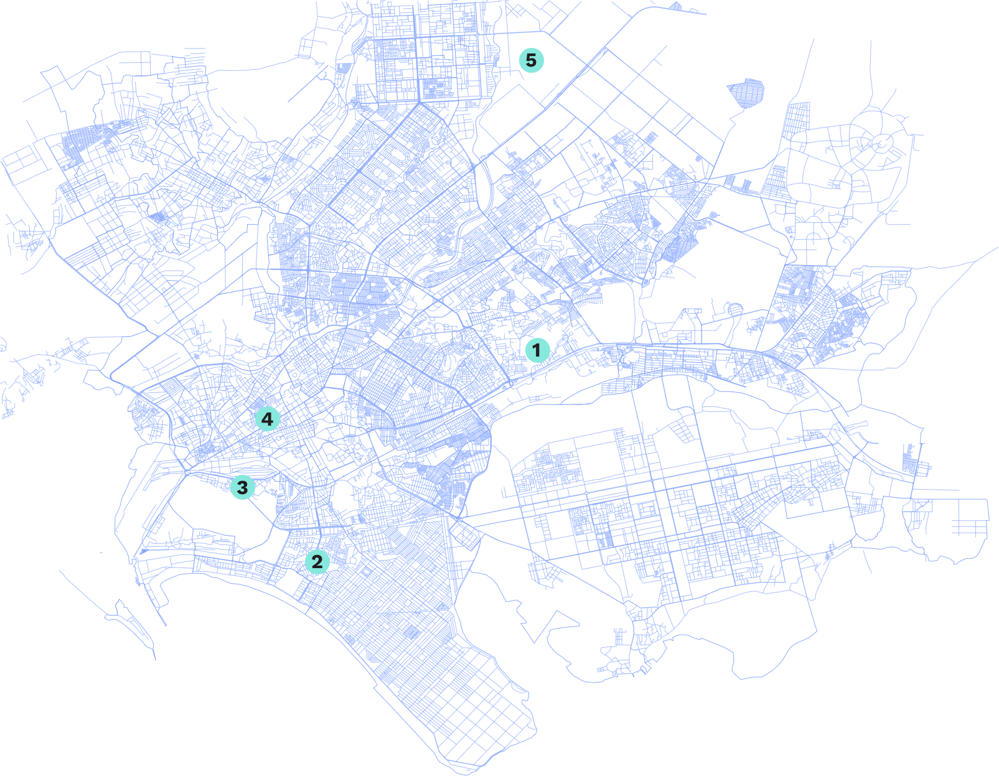
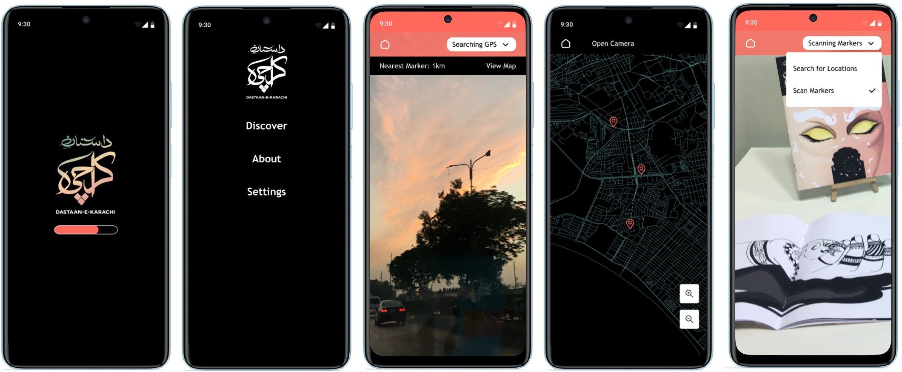
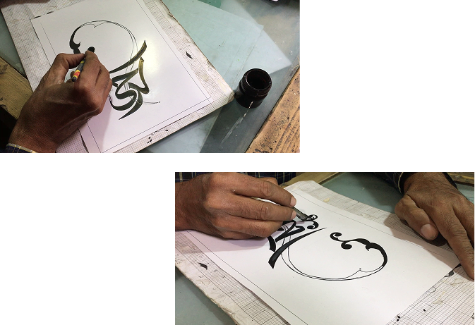
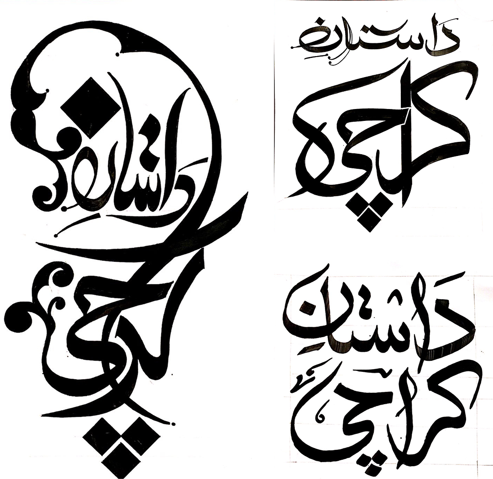
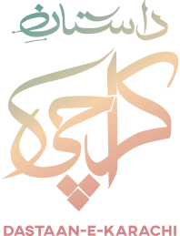

Dastaan-e-Karachi
Augmented reality platform for intangible heritage
Augmented reality · Unity · Vuforia · Marker-based AR · Location-based AR · Cultural heritage · Motion design
*Awarded best thesis at Habib University in 2018.
Company:
-
Role:
-
Year:
2018
Team:
Fatin Nawaz
Context
Karachi's folklore and intangible heritage are fading, and few young people encounter these stories.
Task
To make folklore accessible to public audiences we developed an AR platform to preserve it.
Development
We built marker-based and location-based AR using Unity as the base engine and the Vuforia plugin to generate both markers.
Location-based AR
This was done for selected stories & locations:
- The Ghost Bride of Karsaz
- Abdullah Shah Ghazi Shrine
- Moriro and the Mach
- Ram in Aram Bagh
- The shrine and crocodiles of Mangopir

Marker-based AR
To enable marker-based AR, unique markers were designed and compiled in a zine. Markers work well when they have high contrast and are unique patterns that the camera is easily able to distinguish. We wanted the markers to have a relationship to the stories they brought to life. For the story of the ghost Bride of Karsaz we appropriated the designs of mehendi (henna) as it is worn during festive occasions like weddings.

Karsaz Bride Marker

Motion design
Each story was turned into a series of animations paired with audio.

Interface design
We designed an interface that allows you to toggle between marker-based and location-based AR.

Identity design
The app logo was created using calligraphy to underscore the platform’s relationship to culture and tradition.

Calligraphic process


Reflection
This was my first time designing alongside a developer, and it shaped how I’ve worked with engineers since: design for what the technology can reliably do, and make the constraints meaningful. The markers worked because they carried the stories, like henna for the Ghost Bride. Researching folklore and calligraphy here started a thread that runs through my later work, from Ticket Wala to the Sabeen Mahmud Archive.